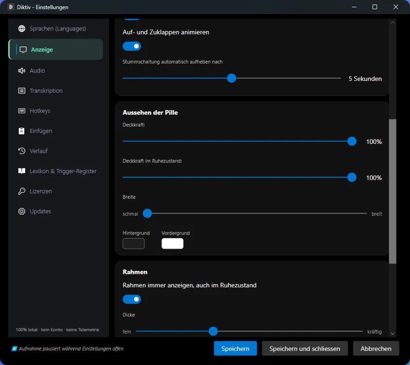

Diktiv ist eine Diktier-App für Windows. Alles auf dieser Seite gehört zur Gratis-Version.
Taste halten, sprechen, loslassen.
Du hältst eine Taste gedrückt, sprichst und lässt los. Kurz darauf steht der Text dort, wo dein Cursor steht, im Mailentwurf, im Dokument oder im Chatfenster.
Guten Tag, Frau Meier, vielen Dank für Ihre Offerte. Wir bestätigen den Termin vom Dienstag, 14 Uhr und freuen uns auf die Zusammenarbeit.
00:22
Bleibt auf deinem Rechner
Whisper ist ins Programm eingebaut. Deine Aufnahmen gehen an keinen Server. Es gibt kein Konto und keine Telemetrie.
Gratis
Die Gratis-Version kostet nichts. Diese Grenzen gelten.
00:22
Höchstens 30 Sekunden pro Aufnahme. Die Anzeige zählt mit.
60Aufnahmen pro Stunde
10Einträge im Verlauf
Landet dort, wo du angefangen hast
Der Text geht in das Fenster und das Eingabefeld, in dem du die Aufnahme gestartet hast. Klickst du währenddessen woanders hin, holt Diktiv dieses Fenster vor dem Einfügen zurück.
Aufnahmetaste halten
Sprechen und loslassen. Der Text landet dort, wo du angefangen hast.
Umschalt + § halten
Der Text geht ausnahmsweise in das Fenster, das beim Loslassen vorne ist. Diese zweite Taste ist frei einstellbar.
Aufnahmetaste kurz antippen
Fügt den zuletzt diktierten Text nochmals ein, im gerade aktiven Fenster.
Aufnahmetaste doppelt antippen
Öffnet den Verlauf mit Suche.
Auch im Terminal
Terminals wie Windows Terminal oder PuTTY erkennt Diktiv und fügt dort so ein, wie sie es erwarten. Das klappt auch in Electron-Anwendungen.
Vier Einfügemethoden stehen zur Wahl, für jede Anwendung einzeln. Nimmt ein Programm die Zwischenablage nicht an, tippt Diktiv den Text Zeichen für Zeichen.
Deine Namen, richtig geschrieben
Fachbegriffe und Namen trägst du ins Lexikon ein, damit Whisper sie richtig schreibt.
Schweizer Rechtschreibung
Für Schweizer Texte schreibt Diktiv ss statt ß.
ss
Verlauf mit Suche
Frühere Diktate findest du im Verlauf, ein Klick fügt den Text erneut ein. Die Gratis-Version behält die letzten 10 Einträge.
Schnellnotiz
Mit einer zweiten Taste hältst du einen Gedanken fest. Diktiv speichert ihn als Markdown-Datei in einem Ordner deiner Wahl.
.md
Deutsches Modell eingebaut
Eingebaut ist eine auf Deutsch trainierte Fassung von Whisper large-v3-turbo. Sechs weitere Modelle lädst du bei Bedarf dazu.
Die Anzeige am Bildschirmrand
Eine kleine Anzeige zeigt, ob Diktiv zuhört. Sie nimmt dem Programm, in dem du schreibst, den Fokus nicht weg. Farben, Rahmen und Deckkraft wählst du selbst.

Schneller mit Grafikkarte
Eine Grafikkarte macht die Erkennung schneller. Nötig ist sie nicht.
NVIDIAAMDIntel
Oberfläche auf Deutsch und Englisch
Menüs und Einstellungen gibt es auf Deutsch und Englisch.
DE EN
Auch leise Stimmen kommen an
Die Empfindlichkeit des Mikrofons stellst du selbst ein.
Bitte beachten
Spracherkennung macht Fehler, Whisper auch. Lies den Text durch, bevor du ihn verwendest. Diktiv ist kein Medizinprodukt.
Was du brauchst
Windows 10 ab Version 1809 oder Windows 11 und ein Mikrofon. Eine Grafikkarte ist nicht nötig.
 Diktiv
Diktiv